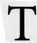

 he polarities between opposite houses allow us to appreciate the houses' deeper connections. The twelve houses consist of four groups, each group made up of three houses (an angular, a succedent, and a cadent house linked to each element). Within each such group, the three houses are in trine aspect with one another. Each set of trines corresponds to one of the classical elements: fire, earth, air, and water. Houses in trine relate harmoniously.
The fire (life) houses are 1, 5, and 9.
The earth (substance) houses are 2, 6, and 10.
The air (relationship) houses are 3, 7, and 11.
The water (terminal, emotional) houses are 4, 8, and 12.
The Sun is the key symbol of the element fire. Sol's fiery nature constitutes the life force of the solar system. The element fire represents the enthusiasm, vitality, confidence, and optimism of the self projecting into the world. The fire houses (1, 5, and 9) show how these factors play out in the life of the individual. The 1st house represents the self, the 5th the self's creative activity, and the 9th the self's expansion through contact with others.
Next let us consider earth. Saturn, the earthiest of planets, is most representative of the earth houses (2, 6, and 10). Saturn stands for structure, building, substance, gravity, and the practical use of matter for tangible, concrete results. The element earth is solid, dependable, careful, and hard-working. The 2nd house represents the native's talents, the 6th his or her practical use of those talents in work, and the 10th the structure that is built from the labor and toil of the 6th.
The next element is air, and Mercury is the quintessential air planet. The winged messenger of the gods, Mercury constantly communicates and creates relationships among people or things. He is an intellectual planet and reflects the preference of the air houses (3, 7, and 11) for ideas and relationships as opposed to concrete reality. The 3rd house signifies relationships in the immediate family, the 7th relationships with a significant other, and the 11th relationships with humanity.
Finally, the Moon is the most watery of the planets. She is sensitive, receptive, passive, protective, motherly, intuitive, and emotional. The Moon reflects the light of the fiery Sun. The Moon and water represent the mother principle (yin) just as the Sun and fire represent the father principle (yang). Water is a symbol for the Tao of Chinese philosophy. The Moon symbolizes the predilection of water houses (4, 8, and 12) for merging, fusing, receiving, transforming, nurturing, and connecting emotionally with others.
Water has its hidden undercurrents and signifies all that is hidden, secret, occult, and psychic. The 4th shows our merging with mother in her womb and with our mother earth in the grave. The 8th shows our fusion with a significant other in sexual intercourse and a sharing of our substance with the other for the procreation of children. The 12th reveals our mystical fusion with God and the universe.
Much of what is true for the houses is true of their corresponding signs of the zodiac, their so-called "con-significators:" The ancient idea is that each house also has a planetary con-significator, which is the planet corresponding to the house in order of the seven visible Chaldean planets: Saturn, the first planet, con-signifies the 1st and 8th houses. Jupiter, the second planet, con-signifies the 2nd and 9th houses. Mars, the third Chaldean planet, con-signifies the 3rd and 10th houses. The Sun, the fourth "planet," con-signifies the 4th and 11th houses. Venus, the fifth Chaldean planet, con-signifies the 5th and 12th houses. Mercury, the sixth visible planet, con-signifies the 6th house. And finally, the Moon, the seventh Chaldean "planet," con-signifies the 7th house.
Odd-numbered houses are considered masculine" (yang) and even-numbered houses "feminine" (yin). Silly as it may seem, parts of the body correspond to the houses in order from head to toe, starting with the head as the 1st house and ending with the feet as the final 12th house. Finally, in classical astrology the houses begin five degrees before the cusp and end twenty-five degrees after.
THE MASCULINE FIRE HOUSES: 1, 5, AND 9
1st House (Angular/Fire/Masculine)
Con-significators: Aries (the 1st sign) and Saturn (the 1st Chaldean planet).
Color: White.
Joy: Mercury (Mercury, the tongue, does well in the house of the head).
Body Parts: Head, face.
Correspondences: The querent, querent's physical body and description, temperament, vitality, health or sickness of the querent, corporature, stature, the life, an absent person with whom the querent has no relation; a ship at sea and its safety; anyone with whom the querent identifies or represents in the matter.
The 1st house corresponds to the pioneering first sign Aries. Starting at the Ascendant, it symbolizes the rising Sun. The degree of the zodiac just coming over the horizon represents the spark of life, the new beginning, of a person or question. In the 4th century, Maternus said that the 1st house shows "the life and vital spirit of men." Mars, ruler of the 1st house con-significator Aries, stands for the native's individuality, leadership, purposeful initiation, self-assertion, and important personal interests.
The 1st house represents the querent, his or her appearance and state of mind, and the situation responsible for the question. It describes the querent's self, body, personality, health, and well-being. In transportation questions, it represents the body of the vehicle. Lilly paid close attention to the description of the querent given by the 1st house to determine whether the chart was radical. Here is what Lilly wrote about the 1st house:
"...it represents the head and face of man, so that if either Saturn, Mars, or the South node be in this house, either at the time of the question, or at the time of birth, you shall observe some blemish in the face, or in that member appropriate to the sign that then is upon the cups of the house; as if Aries be in the Ascendant, the mark, mole, or scar is without fail in the head or face; and if few degrees of the sign ascend, the mark is in the upper part of the head; if the middle of the sign be on the cusp, the mole, mark or scar is in the middle of the face, or near it; if the latter degrees ascend, the face is blemished near the chin, towards the neck" (CA, p. 51).
In traditional horary the 1st house has a special significance as the symbol of an absent person with whom the querent has no other relation around the wheel, especially in questions about "whether one absent be dead or alive." Lilly wrote, "If a question be demanded of one absent in a general way, and the querent has no relation to the party; then the first house, the lord of that house and the Moon shall signify the absent party" (CA, p. 151). However, if the question is about whether "one shall find the party at home he would speak with" and the querent is "much conversant" or "familiarly deals" with that person (who is not a family member), then the 7th house represents the other person (CA, p. 147 and p. 154).
Lilly used a rule from Bonatus to employ the 1st house in questions about an in client or the state of a ship at sea (an ill ship). According to Bonatus, when the astrologer asks about a sick person with the patient's permission, then both the astrologer and the in party belong to the 1st house. If the astrologer asks without the knowledge or consent of the patient, then the 1st house represents the astrologer and the 7th represents the astrologer's clientunless the client bears a different special relation to the astrologer such as father (4th), mother (10th), child (5th), and so on. (See Bonatti, LiberAstronomiae, Part IV On Horary. Project Hindsight Latin Track XIII: p. 69.)
The 1st house is in trine with the 5th and 9th. It is the end of the matter 4th house of the 10th house of career and the mother.
Planets Rising in the 1st House
Planets rising in the 1st often describe the querent and show what lies ahead as those planets rise to cross the Ascendant. Benefics in the 1st reveal good fortune on the way. Malefics in the 1st imply oncoming misfortune or disappointment.
Mars in the 1st often means the matter will not work out as planned, feared, or anticipated. Mars here can bring disagreement, strife, dissatisfaction, or a change of plans to the querent. Mars naturally signifies accidents, surgery, inflammations, heat, arguments, and the use of force.
A 1st house Saturn often delays, hinders, frustrates, or disappoints. Saturn freezes or slows action and, like Mars, may stop the progress of something that is wished for or feared. Unless the chart is otherwise strongly positive, retrograde Saturn in the 1st usually dashes the hopes of the querent. If the question is about something lost, it may return in a damaged condition. Saturn rising can also indicate problems with bones or teeth, or a health problem like a cold.
Uranus rising brings sudden, unexpected, shocking events into the life of the querent. Uranus is the natural ruler of uneasiness, agitation, separation, and divorce. His presence in the 1st may reveal an unpredictable situation, or a querent who may change his or her mind.
Neptune in the 1st may indicate confusion, absentmindedness, wishful thinking, or deception. The querent may be vague, tearful, emotional, mysterious, roundabout, impractical, starry-eyed, or self-deceived. With Neptune in the first, the querent may view the situation "through a glass darkly." Such is also the case if Neptune squares or opposes the 1st house ruler.
5th House (Succedent/Fire/Masculine)
Con-significators: Leo (the 5th sign) and Venus (the 5th Chaldean planet).
Colors: Black and White, or Honey color.
Joy: Venus (because she delights in the house of pleasure and romance).
Body Parts: Stomach, liver, heart, sides, back.
Correspondences: Pregnancy, children, the state of the woman with child, the health or sickness of a child, fun, pleasure, romance ("les amours"-Claude Dariot), recreational sex, creative self-expression, self-indulgence, enjoyment, sport, hobbies, gambling, speculation; personal agents or messengers, ambassadors, banquets, ale houses, taverns, plays; the wealth or movable goods of the father.
The Self of the 1st house pours itself out creatively and proudly in the 5th. This is the house of con-significator Leo the boastful Lion, the sign ruled by the fiery Sun, King of the universe. It is the house of fun, joys, holidays, vacations, narcissism, self-expression, excess, grandiosity, self-aggrandizement, self-gratification, all extensions of the self, and the search for admiration and applause. Anything done mainly for show or ostentation belongs in the 5th. It is the house of the self-absorbed, self-gratifying narcissist who feels entitled to everything and views others as extensions of him or herself.
Maternus said the 5th house governs the number of children and their sex. He added, "It is called Bona Fortuna because it is the house of Venus" and it relates powerfully to the Ascendant by trine. He connects Venus with the 5th because this planet is a natural ruler of sensual pleasure.
Because the 5th is a night house, it rules the personal, individual, or private outpourings of the self. The 5th rules one's creativity, pursuit of pleasure, and the means and products of these activities. It rules pregnancy and how it will go, the children so produced, and offspring of any sort. We locate the conception of offspring with the womb in the 4th, and the immediate future of that conception in the 5th house of children and pregnancy. Lilly regarded the 5th house as "wholly unfortunate by Mars and Saturn, and they therein show disobedient children and untoward" (CA, p. 53). In questions about children, Lilly also looked at the Part of Children (CA, p. 232): Ascendant + Jupiter-Mars.
The 5th has dominion over our hobbies, creative activities, brain children, amusements, fun and the places where one experiences fun, pleasure, sporting events, dissipation, courtship, romances, love affairs, flings, sexual activity for pleasure, creative writing or other productions, plays and performers, festivities, and celebrations done for enjoyment. Writing this book was a 5th house activity for me. The 5th rules recreational drug use done for the "high" or pleasure it produces. When drug use becomes an addiction, we place it under Pluto in the 8th of obsession or Neptune in the 12th of self-undoing.
The 5th governs the operations of the law of chance. In financial matters the 5th house rules betting, gambling, and speculation, including stocks. It governs risk taking in general. In the 5th the person is so taken with the self that his or her opinions assume a grand importance, and he or she misperceives personal speculation as the expectable course of the universe. Such is the grandiosity of the 5th. It also rules extensions of the self such as ambassadors, proxies, personal agents, and power of attorney
The 5th house holds sway over love relationships that do not involve commitment such as dates, boyfriends, and mistresses. Dariot called it the house of "les amours." Here we locate recreational sex, including masturbation done for enjoyment. When sexual activity becomes compulsive, we place it in the 8th.
As the 2nd of the 4th, the 5th house rules the father's resources and money. As the 8th of the 10th, the 5th house shows the death of the mother.
The 5th is the end of the matter 4th house of the 2nd house of one's substance and movable goods. Because of the trine aspect, the 5th works harmoniously with the next fire house, the 9th.
9th House (Cadent/Fire/Masculine)
Con-significators: Sagittarius (the 9th sign) and Jupiter (the 2nd Chaldean planet: 2 + 7 = 9).
Colors: Green and White.
Joy: Sun (this is the House of the ancient Sun god).
Body Parts: The fundament (buttock and anus), hips, and thighs.
Correspondences: Foreign interests and contacts, foreign countries, overseas voyages, long journeys, pilgrimage, profound mental pursuits, expansion of the mind, philosophy, religion, the clergy, attorneys, lawyers, dreams and visions, knowledge, science, learning, the kindred of one's spouse.
The 9th house is associated with the adventurous, traveling, freedom-loving centaurarcher of its con-significator Sagittarius. The first two fire houses, 1 and 5, are below the horizon and relate to more personal matters. As the only fire house above the horizon, the 9th house extends the fire principle of energy and expansion into the realm of the other. It relates to explorations both physical and mental.
Of the 9th house, Maternus said, "In this house we find the social class of men. It also has to do with religion and foreign travel. This house is importantly aspected to the ascendant in trine aspect."
Anything that broadens the mind is located in the 9th house. Commonly this includes college and higher education, religion, philosophy, profound studies, and travel that is more than routine and taken for granted. The 9th governs foreign travel, people at a distance, international finance and trade, foreign communications, and foreigners in general.
The creative manipulation and organization of ideas falls in the 9th house. This includes science, knowledge, the Law, astrology as a system of knowledge, codes of ethics, and the world view of the querent. The clergy and the Church are found here along with lawyers, judges, and other professional classes. The judge as the authority in a lawsuit belongs in the 10th.
The 9th is the house of formalizing and legalizing matters. Here belong orthodox observances, legal procedures, and rituals that legalize like wedding ceremonies, probate hearings, legalizing and adoption, christening a child, appointing a bishop. Publishers and publishing are 9th house matters. Disciplined insight, faith, and prophecy are also located in the 9th. The querent's personal speculations in the 5th correspond to the forecasts of the 9th. Modern astrologers say that the 9th house rules corporations and insurance companies.
Things that are high up or actually in the sky are located in the 9th house. This includes attics and high places, airplanes, space ships, flying saucers if they exist, comets, meteorites, birds, and space shuttles. The 9th house also rules locations and persons closely connected with flight such as flight attendants, airports, and space stations.
The 9th expands those activities that are found in the 3rd house of communication, neighborhood, and siblings. The local meeting of the 3rd becomes the large convention of the 9th. The close kin of the 3rd correspond to the in-laws in the 9th. The trivial publications of the 3rd become the serious books of the 9th. The 3rd house teacher correlates with the 9th house professor or public lecturer. The elementary school of the 3rd contrasts with the university of the 9th.
As the 5th of the 5th, the 9th house represents the children's children or the grandchildren of the querent. Since it rules belief systems, the 9th shows what the querent believes about the question.
The 9th house is the end of the matter 4th house of the 6th house of service, sickness, and co-workers.
THE FEMININE EARTH HOUSES: 2, 6, AND 10
2nd House (Succedent/Earth/Feminine)
Con-significators: Taurus (2nd sign) and Jupiter (2nd Chaldean planet).
Color: Green.
Lot: Pars Fortuna.
Body Parts: The neck and hinder part of it toward the shoulders.
Correspondences: Estate or fortune, resources, substance, money, income, wealth or poverty, money lent, profit or gain, loss or damage, movable goods, valuables, values, immediate future (according to Jones), querent's second in a duel; "the goods or thing that is lost, stolen or missed" (CA, p. 332).
The possessive, materialistic, stubborn bull of Taurus is the con-significator of the 2nd house. The planet Jupiter and the Part of Fortune are also closely connected with this house. Although it is a point and not a planet, Pars Fortuna and its dispositor naturally signify one's money, valuables, possessions, and lost items.
Maternus wrote about the 2nd house: "This house shows increase in personal hopes and in material possessions. But it is a passive house and not aspected to the ascendant. Therefore it is called the Gate of Hell, because it is not in any way aspected to the ascendant." Maybe this is the origin of the saying, "Money is the root of all evil." Lilly wrote that "the Sun and Mars are never well placed in this house, either of them show dispersion of substance" (CA, p. 52).
Any derivative second house represents the fluid resources of the preceding house. Included here are the movable goods and personal possessions of the querent, his or her money, valuables, wealth, investments as opposed to speculations, anything he or she owns that is not land or real estate. Since they are movable goods, lost or misplaced items are ruled by the 2nd house. So too are intangible resources such as rights of ownership, copyrights, royalties, and income derived from the querent's initiative exercised in the 1st house. As the eighth of the 7th, the 2nd house represents the death of a partner.
According to Marc Edmund Jones, the 2nd house is one of several houses in horary astrology that reveal the future of an event. Jones taught that any second house represents the immediate future of the house preceding it, and any seventh house shows the immediate outcome of an action in its opposite house. In traditional hoary any fourth house indicates the final outcome of its first house matter, the dismissal to certainty, the grave or final resting place when all is said and done. Jones believed that there are subtle but important differences among the various facets of the future shown by these different house relationships.
In searching for lost or stolen items, Lilly recommended looking "to the Lord of the 2nd and his Almuten...there are the goods" (CA, p. 352).
The 2nd house is the end of the matter 4th house of the 1 1th house of friends, groups, hopes and wishes.
The querent takes his or her resources in the 2nd and puts them to work in the next earth house, the 6th.
6th House (Cadent/Earth/Feminine)
Con-significators: Virgo (6th sign) and Mercury (6th Chaldean planet).
Color: Black.
Joy: Mars.
Body Parts: Inferior part of the belly, the intestines.
Correspondences: Service, sickness, servants, employees, serf-lord relationships, toil, labor, servitude; small animals, small cattle (up to the size of a goat); day laborers, tenants, farmers, shepherds; uncles, father's brothers and sisters.
We associate the sixth house with the unsullied, critical, discriminating, meticulous, hypochondriac virgin of Virgo. The Virgo native loves purity and cleanliness, is dedicated to service and efficient functioning, and has an interest in health and hygiene. Earth signs are known for being practical. In the 6th house the querent puts his or her talents and resources of the 2nd to practical use in routine work. Lilly wrote that "Mars and Venus in conjunction in this house are arguments of a good physician" (CA, p. 54).
Of the 6th Maternus wrote: "In this house we find the cause of physical infirmities and sickness. This house is called Mala Fortuna because it is the house of Mars. This is also a passive house because it is not aspected to the ascendant." Maternus associated Mars with the 6th of illness because Mars is the natural ruler of infections, accidents, injuries, and epidemics and enjoys his stay in the unfortunate 6th house.
Historically the 6th house has ruled servants and any drudgery or service performed by a serf for the lord of the manor. It ruled all relationships in which deference had to be paid to others because of their higher status in the world. The 6th house person performing the service was in a dependent, servile, or inferior relationship in society. For example, the 6th house governs tenants who pay rent to the "land lord."
In the modern world this serf/lord distinction is no longer as meaningful. Nonetheless, we still regard the 6th house as the house of service. It rules service as attendant effort, employees whom we pay to serve us in some capacity, the work they do, employment in general, organized labor, laborers, co-workers, tradesmen, craftsmen, repair men, maids, baby-sitters, and anyone hired as a servant or domestic.
The 6th holds sway over those who serve the community such as the Armed Forces, the police, and fire fighters in their capacity of rendering service. Police as authorities who enforce the law are ruled by the 10th house. Military service is ruled by the 6th, military police power by the 10th.
A person is considered lord of the organ systems of his or her body. The 6th house governs the dependent relationship of the parts of the body to the whole and thus the health of the organism and its malfunction in illness. The 6th also rules therapeutic activity and healing measures including medications and medical regimens. In matters of health, the general well-being of the organism is ruled by the 1st, the sickness or illness by the 6th, any surgery by the 8th, and the hospital by the 12th. Personal habits that perform a service for the individual are also ruled by the 6th house.
As the 3rd of the 4th, the 6th house rules the siblings of the 4th house parent, i.e., the aunts and uncles related to the querent through the father.
The 6th rules small domesticated animals that serve us. Animals in zoos, serving the larger community, are found in the 12th. It rules food and clothing in their useful aspect, food stores and storage, containers, and appliances that serve us. Climate in general is shown by the 6th whereas weather is ruled by the 4th.
Because the 6th is quincunx the 1st house, it is a house of adjustment. The 6th house dominion over sickness and distress derives from the quincunx aspect. The body parts and functions undergo adjusting and realignment in illness.
The 6th is the end of the matter 4th house of the 3rd house of siblings, neighborhood, communications, and short trips.
As the 6th represents the governance of the body parts in health, the earth house above the horizon, the 10th, signifies the governing of the larger world.
10th House (Angular/Earth/Feminine)
Con-significators: Capricorn (10th sign) and Mars (3rd Chaldean planet).
Colors: Red and White.
Body Parts: Knees and hams (thighs).
Correspondences: Government, vocation, career, status, official office, any position of command or trust, authority, the mother; kings, princes, commanders-in-chief; the judge in a lawsuit (the jurors are signified by the Moon, CA, p. 403); officers in authority; honor, preferment, dignity; kingdoms and empires; the physician's medicine (CA, p. 282); the price of real estate; the querent's boss, anyone in authority over the querent.
The climbing, sure-footed, practical, ambitious goat of Capricorn is associated with the 10th house. As its opposite sign Cancer seeks security in the home, the 10th house con-significator Capricorn seeks security in its position in the outer world. The 10th signifies the querent's position in life, social status, and standing before the world. It represents the authority granted to the querent by his or her place in society. The 10th signifies the business, career, profession, or vocation of the querent, the work done because the querent wants to and not simply for wages. It shows public success, awards and honors as well as public disgrace and shame.
Of the 10th house, Lilly writes that "either Jupiter or the Sun do much fortunate this house when they are posited therein, Saturn and the Moon's South Node usually deny honor.." (CA, p. 55). The Sun is a natural ruler of monarchs, rulers, authority, honor, promotion, preferment, status, recognition, and fame. As such, the Sun bears a close relationship to 10th house matters and feels at home in this house.
Maternus, aware of this Sun/10th house connection, wrote: "This place is the first in importance and has the greatest influence of all the angles. This house we call the Medium Caelum, and the Greeks the Mesuranima, for it is located in the middle part of the universe. In this house we find life and vital spirit, all our actions, country, home, all our dealings with others, professional careers, and whatever our choice of career brings us. From this house we easily see the infirmities of the mind." The 10th aspects the Ascendant powerfully by square.
The 10th represents one of the parents, traditionally the mother. In the 1st century, Dorotheus referred to the 1st cardine (the Ascendant) as representing the native, the 10th (M.C.) as the cardine of the native's "children and of work" and also as the cardine of the "government," the 7th (Descendant) as the cardine of "marriage," and the 4th (IC) as the cardine of the "parents," the "house of the fathers" and the "outcome of the matter." Except for placing children in the 10th, these rulerships correspond to what we use today. Thousands of years of tradition have treated the 4th house as the "house of fathers." The father's spouse belongs opposite him in the 10th house.
The ancients answered general questions about parents from the 4th house. When the question specified the mother, they looked to the 10th for the spouse of the 4th house father. No doubt this rulership developed in a patriarchal society which regarded the father as the primary parent and assigned him to the 4th because he was the parent of primary significance. According to Hone, "a woman was not considered worth a horoscope unless she was of great importance, since we only find them for such as a queen."
Because the 10th is the house of "government," we locate bosses, mayors, presidents, superiors, employers, school principals, college deans, and administrators here along with the administration of any matter. The querent's reputation, success, public office, public image, power in society and fall from power are located in the 10th. Credit as a matter of public reputation is found here.
This house represents all those in power or authority, any superior with a right to give orders, any officer of higher rank in the military or in an organization, and any governing body. Government in any aspect to which the querent is subject is located in the 10th. Advisory bodies in government are found in the 11th as resources of the government. The judge presiding in a court of law is placed here. The jury as the judge's resource is in the 11th. Police power and any person or agency that enforces discipline are symbolized by the 10th.
As the 2nd of the 9th, the 10th house shows profit from 9th house matters such as publications, imports and exports, and foreign or long-distance matters.
The 10th is the end of the matter 4th house of the 7th house of marriage and partnership. As such, it shows how a marriage will end.
THE MASCULINE AIR HOUSES: 3, 7, AND 11
3rd House (Cadent/Air/Masculine)
Con-significators: Gemini (3rd sign) and Mars (3rd Chaldean planet).
Colors: Red and Yellow, or "Croceall," or Sorrel.
Joy: Moon.
Body Parts: Shoulders, arms, hands, fingers.
Correspondences: Siblings, cousins, kindred, neighbors, movement, communication, immediate environment, local travel, short or inland journeys, letters, rumors, reports, news, intelligence, messengers in general (but messengers as ambassadors of the querent belong to the 5th house).
The chattering busybody twins of Gemini are con-significators of the 3rd house of siblings and local travel. Maternus said that from the 3rd house we predict "everything that concerns brothers and friends. Dea is the name of this house; but is it also the house of travelers" The Moon rejoices in the 3rd because Luna enjoys "travel, trotting, and trudging" and "being seldom quiet," CA, p. 52)
The 3rd house rules the immediate taken-for-granted environment of the querent, including his siblings, near relatives (kindred other than parents and children), neighbors and neighborhood. It is the general house of cousins and close relatives when the maternal or paternal connection is not known. Lilly warns that Mars, Saturn, or the Moon's South Node in the 3rd suggest problems with siblings or neighbors (CA, p. 188).
The 3rd house association with Gemini reveals its dominion over communication, mental activity, and transport of any kind. The 3rd rules transportation and the gathering of facts and information. It governs cars and garages, buses, walking, bicycling, motoring, talking, visiting, newspapers and magazines, computers and software, telephones and tape recorders, tools and gadgets, brothers and sisters, messages and messengers, streets and sidewalks, periodical literature, books as objects, files and filing systems, radios, TVs, typewriters, teachers at any level, news and gossip, elementary education, local meetings, editorial work, and short trips of a routine nature. The 3rd house, Mercury and Gemini rule papers and documents as well as quick trips and commuting. As the 11th of the 5th, the 3rd house rules the friends of children.
According to Jones, third house relationships have special significance for derivative houses. Any group of items belonging to the querent, or any group of persons related to the querent, who are members of a "family" and share a sibling-type relationship to each other, has 3rd house spacing around the wheel. Every other house (skipping one in between) bears a 3rd house relationship to the previous house in the sequence.
For example, in modern horary, if the querent has three brothers, the 1st brother belongs in the 3rd house, the next brother in the 5th house (skipping a house), and the last brother in the 7th house (skipping a house again). If the querent asks about two friends, the first friend is in the 11th house, the second friend is in the 1st house. Or, if the querent has five pets, they are assigned houses in the sequence: 6th house for the first pet, 8th for the second, 10th for the third, 12th for the fourth, and 2nd for the last little animal. As long as the objects belong to the same class and therefore have an abstract sibling type relationship with each other, you can space them out in every other house around the wheel.
The 3rd house is the end-of-the-matter 4th house of the 12th and shows the outcome of confinement, hospitalization, escapism, and hostage situations.
7th House (Angular/Air/Masculine)
Con-significators: Libra (7th sign) and the Moon (7th Chaldean planet).
Color: Dark Black.
Body Parts: The hips (haunches), and the area from the navel to the buttocks.
Correspondences: Marriage, partnership, open enemies, yokemate, wife, girlfriend, boyfriend, sweetheart, lover, significant other, unrelated person with whom you have dealings, place of removals where one would go (CA, p. 370), adversary in a lawsuit, opposing party in a war; quarrels, duels, wars, contentions, controversies, legal battles, lawsuits; the querent's astrologer or physician, the thief; fugitives, runaways, outlaws; one to whom a message is sent. (Note that the natural signifier of fugitives is the Moon, CA, p. 328.)
Libra, the con-significator of the 7th house, was originally the sign of the claws of the scorpion. The Greeks renamed Libra the yoke because the constellation resembled the yoke worn over the shoulders to balance two buckets or the yoke of the ox that plows the field. Libra as the yoke and its ruler, Venus, goddess of love and money, became the symbols of marriage. Saturn has its exaltation in the sign Libra (the balance and the yoke) because he represents the commitment and restraint symbolized by the yoke of Libra. The essential meaning of the 7th house is a balanced relationship between equals. Lilly wrote of the 7th house that "Saturn and Mars unfortunate herein, show ill in marriage" (CA, p.54).
In the fourth century, Maternus wrote: "From this house we shall inquire as to the nature and number of marriages. But this house is aspected most detrimentally to the ascendant for it is in opposition" Planets opposing the Ascendant can indicate problems with the querent's body or health.
Isaac Newton gave us a fundamental law of physics: for every action there is an equal and opposite reaction. The corresponding principle in astrology is found in the balancing scales of the sign Libra and in the associated 7th house. Marc Edmund Jones used the Newton's symbolism to establish his house-and-its-opposite method of horary analysis. Jones believed that one could read the immediate outcome (opposite reaction) of a question through its opposite or 7th house. In practice, I have not found the Jones method reliable.
Lilly made special use of the 7th as the house of "him you would speak with" (CA, p. 147) and with whom you "familiarly deal with" but have no other relation (e.g., parent, child, etc.) around the wheel. Lilly wrote, "if the Lord of the 7th house be in any of the four Angles, you may conclude the party is at home with whom you would speak with." If the querent (1st house) sends a messenger (5th house), then the 7th represents "him to whom the messenger is sent" (CA, p. 236). However, if you ask "in a general way" whether "one absent be dead or alive" and the "querent hath no relation to he party; then the first house, the Lord of that house and the Moon shall signify the absent party" (CA, p. 151).
The 7th house as the opposite of the 1st shows other people who are on equal footing with the querent. It rules all kinds of partnerships and unions, the marriage partner, committed (yoked) relationships, marriage as well as divorce, open enemies and opponents, and significant others. It has general dominion over any other person with whom one has dealings. If the querent refers to another person by name, that person may have specific location in another house, (e.g., a child in the 5th) but he or she also has placement in the 7th. The aspects made by 7th ruler to the querent's significator should confirm the aspects between the specific ruler of the person and the ruler of the querent.
Lilly also used the 7th to answer questions about whether to "remove from one house or place to another, or to stay or abide in any place or not" (CA, p. 212). Here the 4th represents the current residence and the 7th, as 4th of the 4th, signifies the place (or dwelling) to which one would remove.
The 7th represents the other party in any contest, dispute, lawsuit, or agreement. It rules personal counselors and consultants such as doctors, therapists, lawyers, or astrologers whose professional help we seek. All contacts with equals, joint activities, sharing of experience, and cooperation or competition with others are found in the 7th. All contracts, agreements and contractual relationships between equal partners are ruled by the 7th. A contract as a written document per se is ruled by the 3rd but as a legal agreement by the 7th.
In questions of theft, the 7th rules the thief (as do peregrine planets in an angle or in the 2nd house). The 7th also rules runaways, criminals at large, and fugitives from justice.
As the 4th of the 4th, the 7th rules the father of the father, i.e., the paternal grandfather of the querent. As the 4th of the 10th, the 1st house rules the maternal grandfather. As the 4th of the 4th, the 7th is the end of the matter house of the querent's parents, especially the father.
11th House (Succedent/Air/Masculine)
Con-significators: Aquarius (11th sign) and the Sun (4th Chaldean planet: 7 + 4 = 11).
Colors: Saffron or Yellow.
Joy: Jupiter (which rejoices in the trust and confidence of the 11th house).
Body Parts: The legs to the ankles.
Correspondences: Friends and friendship, fidelity or falseness of friends; hopes, wishes, trust, confidence, praise and dispraise, counsel; the thing at present hoped for, the love and concord of friends and acquaintances; the wealth, resources, and goods of the person in command.
The detached, intelligent, eccentric, new age water bearer and the wavy electrical lines of Aquarius are associated with the 11th house. Having learned to relate to a significant other in the 7th, the native learns to make connections with humankind in the final air sign Aquarius, con-significator of the 11th house.
Maternus described the 11th as follows: "It is called the Bonus Daemon or Bonus Genius, by the Greeks Agathos Daemon. The Medium Caelum is often found in exact conjunction with this house [using equal houses from the Ascendant]. It is, furthermore, the house of Jupiter, and not indifferently aspected to the ascendant; it can be seen to be in sextile aspect." The ancients associated the 11th with Jupiter because they felt it was an especially fortunate house that the greater benefic would rejoice in.
The 11th rules the hopes, wishes, goals, objectives, and desires of the querent. It rules friends, colleagues, social life, casual ties, clubs, societies, and group associations. Acts of friendship and friendly advice are found here along with counsel and counselors in general. Bruce Scofield argues that one's professional clients also belong to the 11th house (perhaps as the income 2nd of the career 10th).
In questions about governments, the 11th rules counseling bodies such as legislatures, city councils, and boards of directors. In a court of law the jury as a counseling body to the 10th house judge is found in the 11th. A blind question such as "Will I get my wish?" belongs in the 11th house.
As the 2nd of the 10th, the 11th house shows profit from the querent's career or business. As the 8th of the 4th, the 11th shows the death of the 4th house parent. As the 5th of the 7th, the 11th reveals the romantic aspects of the marriage partnership. The 11th also rules the querent's group and club activities, his socializing with friends, and his involvement in humanitarian causes.
The 11th is the 4th of the 8th and rules the end of the matter of joint finances and goods of the dead.
THE FEMININE WATER HOUSES: 4, 8, AND 12
The element water governs protection, intuition, fusion, mysticism, secrecy, and endings. The water houses are often called the hidden and terminal houses of the chart.
4th House (Angular/Water/Feminine)
Con-significators: Cancer (4th sign) and the Sun (4th Chaldean planet).
Color: Red.
Body Parts: Breast, lungs.
Correspondences: Father, home, earth, foundations, base of operation, lands, mining, agriculture, real estate, houses, tenements, inheritances, tillage of the earth, treasure lying hid in the ground; the end of a sickness, the end of anything, the grave; towns and cities, ancient dwellings, gardens, fields, pastures, orchards, the quality of the grounds one buys; regarding something lost, missing, or stolen, "the place where it is laid" (CA, p. 332).
The 4th house is associated with the protective, security seeking, retentive crab of the sign Cancer. The ancients called the 4th the house of the fathers. According to Maternus, the 4th house shows us "family property, substance, possessions, house-hold goods, anything that pertains to hidden and recovered wealth" We saw the importance of the symbolism of hidden and recovered wealth in Sara's second question (see p. 24).
Any 4th house is the base of operations, the foundation, and the point of final recourse of its 1st house. The 4th house represents land, real estate, the home, the womb, the grave, and the parent of final appeal, usually the father.
The 4th house has special significance in horary as the end of the matter of the 1st house question posed by the querent, its ultimate outcome, its final resting place, its dismissal to certainty. Aspects to the ruler of the 4th, to planets in the 4th, and sometimes to the cusp of the 4th reveal how the matter will end for the querent when all is said and done. As the house of the "cardine under the earth," it rules buried treasure and things hidden underground. The IC is the darkest, most secret place in the chart.
The 4th has dominion over parks and gardens, the weather, monuments and memorials, natural resources on or beneath the earth, groups of homes such as towns and cities, and the manifestation of natural forces such as earthquakes, floods, and storms. The 4th house rules the womb and the feeling of security outside the womb. As the final resting place or end of the matter, it rules old age, the grave, museums, history, and anything that has been preserved.
Questions about real estate, about buying a home or the quality of the home are located here. As the 10th of the 7th, the 4th house stands for the career or business of the partner. As the 6th of the 11th, it represents the health of friends.
Ashes to ashes, dust to dust. In the 4th house our physical body returns to the earth from which it came. The watery quality of the 4th house symbolizes our final merging with mother earth.
8th House (Succedent/Water/Feminine)
Con-significators: Scorpio (8th sign) and Saturn (1st Chaldean planet: 1 + 7 = 8).
Colors: Green and Black.
Body Parts: Bladder and sex organs.
Correspondences: Death, transformation, joint finances, the estate of the dead, wills, legacies, fear and.anguish of mind, danger, penetration, rape, orgasmic sex, rebirth; money owed to the querent, loans, money of others; garbage, elimination, butchers and surgeons, hemorrhoids, kidney stones, strangury (painful strained urination), poisons; the partner's wealth or movable goods.
The 8th house is associated with the deadly penetrating sting of the scorpion. Its rulers Mars and Pluto give the eighth house its injurious, cutting, piercing quality. As we fuse with the earth in our final resting place in the 4th, we merge with a significant other in the sexual intercourse of the 8th. The modern ruler of Scorpio, Pluto symbolizes the seed that must die in order to grow.
Maternus called the 8th a passive house and said, "From this house is discovered the kind of death. But it is necessary for us to know that no planet rejoices in this house, except the Moon, and then only in nocturnal charts. If the waxing Moon is found in this house in a nocturnal chart, and if she is not in aspect to any unfavorable planets, and if Jupiter is in trine or sextile aspect to her in her own sign or in the sign of Venus or Mercury or Jupiter, or in the terms of any of these planets, this portends the greatest good fortune and riches beyond measure, great glory of material power and outstanding recognition in worldly position." The 8th house doesn't sound that bad under the right circumstances.
The 8th house represents death and rebirth, matters of the dead such as wills and legacies, orgasmic sex which regenerates the species, obsessions and compulsions, and matters that are occult or hidden. Like the 6th house, it lies five houses away in quincunx with the Ascendant. The quincunx implies a need for adjustment and restructuring.
The 8th governs occupations connected with elimination, injury and death. This includes undertakers, coroners, surgeons, butchers, sanitation workers, and garbage men and women. The dominion of Mars and Pluto over probing and penetration connect the 8th house, through its con-significator Scorpio, to research, depth psychology, psychoanalysis, and the occult. Negatively, penetration relates to rape, murder, sadism, sodomy, and other ways people pierce one another. The sex of the 8th is vastly different from the recreational sex of the 5th house where Venus rejoices.
Questions about joint finances, pensions, income tax returns, retirement money, insurance, and inheritance are located here. If the 7th is used as the place the querent wishes to move to, then the 8th is the future or profit of that move. The 8th rules regeneration both literally and symbolically as in the restructuring of a corporation.
The 8th house rules garbage, refuse, waste, elimination, injury, sexually transmitted disease, surgery, deep emotions, envy, malice, jealousy, peril, danger, and destruction. The significator of a lost object in the 8th may mean the item is out in the garbage.
In financial matters, the 8th rules the money of the partner, wills, legacies, goods of the dead, taxes, fees, bankruptcy, alimony, pensions, retirement premiums, public funds, recovery of debts, escrow, mortgages, loans, joint resources, mutual profits, insurance payments as a beneficiary, the money of a defendant in a lawsuit, the funds of the 7th house seller of goods, and the profit of a partnership or of a removal.
As the 2nd from the 7th it reveals the state of the other person's money. The borrowing or loaning of money is a form of partnership or legal agreement which is located in the 7th, and the money loaned per this agreement is ruled by the 2nd from the 7th or 8th house of the radical chart.
The 8th is the 4th of the 5th and represents the end of 5th house matters related to children, pleasures, and creative activities.
12th House (Cadent/Water/Feminine)
Con-significators: Pisces (12th sign) and Venus (5th Chaldean planet: 5 + 7 = 12)
Color: Green
Joy: Saturn (because Saturn delights in misery, obstruction, and undoing.)
Body Parts: The feet.
Correspondences: Sorrow, fear, tribulation, mischief, despair, confinement, imprisonment, self-undoing, all manner of affliction; karma, the past, reprieve, witches, large animals, great cattle (larger than a goat), secret informers, those who maliciously undermine their neighbors, banished men; secret enemies not named, anyone committed to prison, captives, slaves, hostages; institutions of confinement, monasteries, hospitals, prisons, infirmaries, places of retreat.
The dreamy, mystical, hidden, emotional, poetic, psychic, sacrificial Christ-like fishes of Pisces are associated with the 12th house. Maternus was not a fan of the 12th house. He wrote, "This house the Greeks call Cacos Daemon; we call it Malus Daemon. From this house is easily determined the nature of enemies and the character of slaves. Also we find defects and illnesses in this house. But it is a passive house because it is not aspected to the ascendant. It is, moreover, the house of Saturn."
Maternus connected the 12th to Saturn because Saturn is the greater malefic that naturally rules the misfortunes of the 12th where Saturn rejoices. The 12th is the house of our mistaken ways, our deepest secrets, our sorrows, whatever we keep hidden from others and often from ourselves, our hang-ups, our unconscious, our hardest sacrifices, our mistakes, our trial and tribulations, and our own undoing.
The 12th house rules incarceration, confinement, and release from confinement. Any type of involuntary limitation of the freedom of the querent is located here. In the 12th house are found hospitals, prisons, jails, zoos, reform schools, nursing homes, involuntary stays, protective custody, concentration camps, and insane asylums. Because mental and emotional problems also involuntarily limit the individual, the 12th house rules alcoholism, psychosis, delusions, hallucinations, pipe dreams, neurosis, and psychological maladjustment. It represents self-harm, suicide, sacrifice, and basic inadequacies or limitations of the self. The law of karma as it limits the individual is placed in the 12th.
On the other hand, the possibility of release from confinement is also ruled by the 12th. The literal escape from bondage through parole, reprieve, rescue, liberation, pardon, or getting out on bail is shown here. Release from mental or emotional bondage through psychotherapy, meditation, suicide, charitable work or other circumstances is also shown by the 12th. Widowhood as grief and as release from the marriage bond belongs in the 12th. Reincarnation as a type of bondage or release from karma is often assigned to the 12th house.
The 12th has dominion over those who are confined or who escape from confinement such as hospital patients, prisoners, hostages, mental patients, and escaped convicts. It rules hidden enemies who work behind the scenes to limit or hinder us. It also rules feelings and attitudes that hinder the personality such as envy, malice, enmity, worry, fear, and selfdestructive thoughts. The 12th rules unexpected misfortune and help with misfortune through kindness or charitable work.
The 12th governs work done in seclusion or behind the scenes such as work done in a home office. In the 12th we find retreats and places of retreat, recluses, confidential matters, secret societies, private activities, remote out of the way places, mysterious locations and conditions, undisclosed matters, and secrets. It also rules bondage, persecution, plots, kidnapping, assassination, ambushes, treason, secret enemies, subversions, clandestine acts, and the state of being hidden or invisible.
As the 6th of the 7th, the 12th house rules the sickness of the partner. As the 3rd of the 10th, the 12th rules the siblings of a parent, that is, the aunts and uncle of the querent on the mother's side. The 6th house rules the querent's aunts and uncles on the father's side.
The 12th is the 4th of the 9th and shows the end of the matter of publications, college education, foreign travels, and so on.
A Hop, SKIP, AND A JUMP-SOME MODERN NOTIONS ABOUT THE HOUSES
It is hard enough to assign rulerships when only one matter concerns the astrologer. To complicate matters, some questions ask about a group or family of related issues. In horary analysis it is best to keep things as simple as possible. You should only resort to the schemes described below when the question forces you to. Otherwise, stick to the basic twelve houses for best results and don't get bogged down in horary trivia. The techniques outlined in the remainder of this chapter are used, by and large, by modern horary astrologers.
Sibling or Third House Spacing of Similar, Owned Objects
Families consist of parents whose children are called siblings. Modern horary astrologers often extend the idea of a sibling to any group of objects or persons of similar kind belonging to a family. In this analogy the querent as owner becomes the symbolic parent of the group of sibling-like objects. For example, in the mental health field the current patients of a psychoanalyst are referred to as analytic siblings.
If the querent owns three homes, these homes are of like kind and bear a sibling-type relationship to one another. We place the first home in the natural real estate 4th house of the chart. The second home goes in the 6th house, that is, the 3rd of the 4th. The third home gets the 8th house, or the 3rd of the 6th. If the querent owns more than three properties, we keep skipping houses around the wheel to locate each of the homes. Such spacing would be important in a question such as, "Should I place my second or my third home on the market?"
The principle is to locate objects related abstractly as siblings to every other house around the wheel. To qualify for sibling status, the objects must all belong to the querent and be of similar kind. The querent must be able to refer to them as my children, my homes, my pets, my lovers, and so on.. A first sibling belongs in the natural 3rd house, a second sibling in the 5th, a third sibling in the 7th, a fourth sibling in the 9th, and so on. If the querent asks, "Will my brother be safe?" you would use the 3rd house as the generic house of siblings. If the querent specifies, "Will my fourth brother come home?" you can still use the 3rd house for any sibling, but you may also want to check the 9th house of fourth siblings to confirm the answer.
Modern horary astrologers apply the same principle to the schools attended by the querent. The list below illustrates third house spacing of one's schools:
Elementary School: 3rd house
Junior High School: 5th house
High School: 7th house
College: 9th house.
What if the querent asks a question about higher education and has attended college, graduate school, and a professional school? You could keep skipping houses around the chart to find the present level of education, but the simplest solution is to use the 9th as the ruler of all higher education. Again, only skip if you have to. Now we must turn to the tricky matter of a group of objects or persons that does not yet belong or relate to the querent.
Non-Sibling Relationships-Spacing Similar Non-owned Objects
General Principle: Stand in the house of the thing you own. For a moment, consider the house of the thing you own a new first house and, from there, look to the house of the thing you want.
When the querent asks about more than one object of the same kind but one of them does not belong to the querent, the sibling relationship does not apply. If the querent owns one home and wants to buy a new one, you cannot regard the new home as a sibling of the first residence because the querent does not yet own it. The new home is not yet a member of the querent's family. The new home does not become a sibling of the old home until the querent buys it. There is not yet a symbolic parent-child bond.
In this case, the astrologer cannot place the new home in the 3rd of the 4th house. Only a second home already owned by the querent goes in the 6th. Parenthetically, the 6th house rules the lodgers or tenants who occupy a property owned by the querent.
To place an object not owned by the querent if he or she already owns one such object requires some mental gymnastics. You assign the object already owned to its natural house. The new object bears the same relationship to the old object as the old object does to the querent. In other words, the astrologer momentarily regards the natural house of the old object as a new first house and counts around the wheel from that house to find the house of the new object. I wish I could think of a simpler way to say all that.
To continue with our example, a home already owned by the querent belongs in the fourth mundane house. A home the querent wishes to buy bears a fourth house relationship to the natural 4th house and lies in the 7th house of the chart. This principle explains why the 7th is the house of removals. The querent's current residence is in the 4th house. The place where he or she wants to go (remove to) is in the 4th of the 4th, or the 7th. Nonetheless, the ancients used the 4th house for the home the querent wanted to buy, regardless of any other property owned by the querent.
In a similar way, some drudge work the querent is now doing belongs in the 6th house. A tedious job he is seeking when he already has a routine task is located in the 6th of the 6th, or the 11th house. It is as if the querent stands in the current work place and looks to the next place of employment, which is six houses away. Again, the house of the new task is as far away from the old one as the old task is from the querent. In practice, the astrologer rarely needs to go into such detail. Most questions about jobs can be answered from the natural 10th and 6th house rulerships.
On the other hand, suppose a person asks, "Should I leave the job with IBM and take the job with Wang?" The first career mentioned goes in the 10th house. The second career move goes in the 10th of the 10th, or the 7th house of the chart. The status of the rulers of the 7th and the 10th and their aspects to the ruler of the 1st would tell what career move is the better choice.
Sequential Legal Personal Relationships-Seventh House Spacing
According to Mark Edmund Jones, the laws of society demand that certain relationships come into the life of the querent only in a sequence in which a newcomer replaces a predecessor. Marriage is such a relationship. Jones gives a method to space sequential legal relationships. Not all astrologers agree with him.
In the United States the querent may take a second spouse only after the death or divorce of the first spouse. Jones spaces such relationships by moving from the house of the quesited to its opposite. The 7th house governs the first spouse, the opposite 1st house rules the second spouse, the 7th house rules the third spouse, and so on, back and forth across the wheel. The astrologer only resorts to this spacing when the question demands it. Otherwise, any question about a spouse belongs to the 7th house. Keep it simple.
In societies that allow bigamy, a sibling relationship exists among the wives in the harem. The sultan's first wife goes in the 7th, the second wife in the 9th, the third wife in the 11th, the fourth wife in the 1st, and so on. A new woman whom the sultan eyes that is not already a member of his harem would fall in the 5th house of paramours-until he marries her and she takes her place in the every-other-house spacing of her siblings in the harem around the wheel.
If we apply the Jones' rule for sequential legal relationships to stepmothers, we locate the biological mother in the tenth, the first stepmother opposite her in the fourth, and a second stepmother back in the tenth. If the querent regards the stepmother as a mother, it is simplest to use the 10th for both mother and stepmother.
SPECIAL CASES OF LOCATING THE QUESTION
Entire books have been written about special cases of horary questions. Different astrologers may approach the same problem differently. To give a flavor of the range of possibilities, I will briefly review the controversy over the appointment of mothers and fathers in the horary chart.
Mother/Father
As explained previously, the ancients called the 4th house the "house of fathers" and always located the father there. They gave the mother the 10th house because it is the 7th house of the 4th and signifies the father's spouse. Traditional horary astrologers have always stuck to this assignment with good results. In the modern world, with changes away from a patriarchal society, these house rulerships appear to be shifting. The reader will have to experiment to see which works best. Jones thought that if you consistently reversed the traditional mother/father rulerships, the universe would bring you questions that worked in your system. I adhere to the traditional rulerships and assign the father to the 4th house.
HISTORICAL INTERLUDE DOROTHEUS OF SIDON
Dorotheus of Sidon was an influential astrological poet whose work spanned the third quarter of the first century. He wrote an important text on horary and electional astrology (in Greek katarchai for "beginnings") in which he summarized what was known up to that time. He taught that favorable days occurred when the Moon transited through your natal Sun sign or through a sign in trine with it, and unfavorable days are ones when the Moon travels through a sign square or opposite to your natal sun sign.
Among many other things, Dorotheus discussed the considerations before judgment and summarized the rules for finding lost objects. He also mentioned the "terms"-unequal fivefold divisions of the zodiac signs-that came to Greece from Egyptian astrologers.